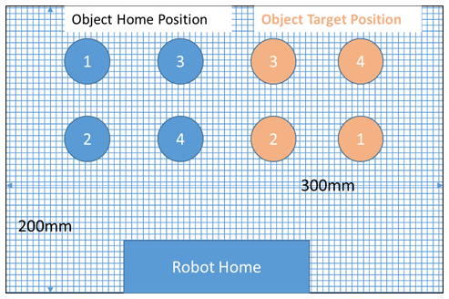
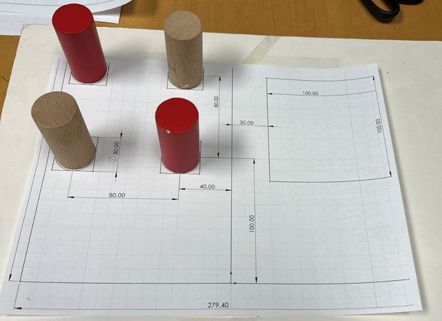
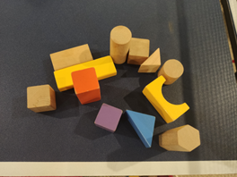
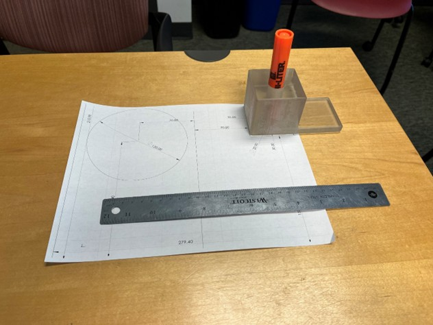

Task 1: Pick and Place Wooden Blocks
- Goal:
- Pick and place a variety of objects from one position to another
- Pick and place as many objects as possible in a given time window (about 90-120 seconds)
- The robot should be pre-programmed to conduct all tasks. Once it is set, no one can touch the robot or the object.
- Scoring:
- A pick/place task is successful if the object is placed in the designated container box.
- Each successful pick/place task is counted 10 points
- The total score is calculated as the total number of tasks times 10 points
Field Setup
Download and print in 1:1 scale, the pdf file of the field setup here:
See the images below for the field setup:



Task 2: Pick a Marker Pen and Trace a Curve
- Goal:
- (20 points) Robot grasps a marker pen from a pen holder
- (40 points) Robot moves the pen tip to trace a curve (e.g. circle) on a field paper (letter size; exact dimensions will be given)
- (20 points) Robot places the marker back into the pen holder
- Total time: 120 secs
- Maximum points: 80
Field Setup
Download and print in 1:1 scale, the pdf file of the field setup here:
See the image below for the field setup for pen picking and tracing:
